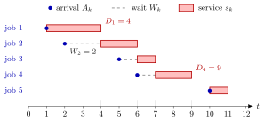

Queue Sample-Path Simulation¶
Method¶
A queue sample-path simulation turns one list of inter-arrival times and service times into the arrival, departure, waiting and sojourn times of the jobs of a single-server queue that serves jobs in order of arrival (FIFO) and starts empty. Start with ; these two values only initialize the recursion and belong to no job. For , apply the arrival-time recursion and the single-server service recursion:
Here is the arrival time, the departure time, the sojourn time and the waiting time in queue of job . Along the computed path, the average waiting and sojourn times are
The time-average number of jobs in the system over and the fraction of jobs that wait at least a threshold are
To simulate a model rather than replay data, the inputs are generated as independent draws of the inter-arrival time and of the service time , for instance by inverse-transform sampling.
Interpretation¶
The recursion is careful bookkeeping. A job can start only when it has arrived and the server has finished the previous job; it leaves one service time later. Fed with a long list of random inputs, the recursion produces one possible history of the queue, and averages along that history estimate long-run performance without any formula for a stationary distribution.

The figure is Example 1. Each row is a job. Job 2 arrives at time 2 while job 1 is in service until , so it waits (dashed) before its red service bar starts. Job 5 arrives at time 10 after the server has emptied at , so its service starts at once.
The recursion for uses only because one server serves the jobs in arrival order. With servers, job need not wait for job , and the simulation must track the remaining work of each server instead (Algorithm 3.3.6). Because the queue starts empty, early jobs wait less than typical jobs, so a path must be long before its averages mean much.
The input step is the inverse-transform sampling of Probability Theory, and the discrete-time queue recursion of Week 2 is the same bookkeeping per period. Probabilistic arithmetic (Section 1.5) can push whole pmfs through the Lindley recursion, because is independent of and .
A common slip is to treat , and as independent when computing the distribution of . They are not: a long inter-arrival time makes large and small, so the two are negatively correlated (Example 3).
Key Results¶
- Only waiting and sojourn times needed: the Lindley recursion , , gives the same values without storing and ; equivalently (TF 3.3.2).
- holds exactly for the simulated jobs, since all of them have left by : the total of all sojourn times equals the area under the number in the system on (Section 3.1, (3.1.8)).
- Averages must exclude the initial values and : the mean departure time is (TF 3.3.1).
- For independent exponential inter-arrival and service times with rates and , the notes' path of jobs gives , , , maximum waiting time and .
- Since is independent of , the exact pmf of follows by repeated addition, subtraction and positive part of pmfs (Algorithm 3.3.5). The pmf of does not follow by adding the pmfs of , and , because and are dependent (TF 3.3.3).
- Multi-server version (Algorithm 3.3.6): , , , , then . This picks the shortest wait; the shortest sojourn time needs when the rates differ (TF 3.3.4).
Examples¶
1. Five jobs by hand. Take and .
| 1 | 1 | 3 | 1 | 1 | 4 | 3 | 0 |
| 2 | 1 | 2 | 2 | 4 | 6 | 4 | 2 |
| 3 | 3 | 1 | 5 | 6 | 7 | 2 | 1 |
| 4 | 1 | 2 | 6 | 7 | 9 | 3 | 1 |
| 5 | 4 | 1 | 10 | 10 | 11 | 1 | 0 |
Hence , and . Three jobs wait at least one time unit, so . Lindley's recursion agrees: .
2. A simulation in Python. The notes' example with and :
import numpy as np
rng = np.random.default_rng(3)
n, lam, mu = 10_000, 1.0, 1.1
X = rng.exponential(1 / lam, n) # inter-arrival times x_k
S = rng.exponential(1 / mu, n) # service times s_k
A, D = np.zeros(n + 1), np.zeros(n + 1) # A[0] = D[0] = 0
for k in range(1, n + 1):
A[k] = A[k - 1] + X[k - 1]
D[k] = max(A[k], D[k - 1]) + S[k - 1]
J = D[1:] - A[1:] # skip the initial values A[0], D[0]
W = J - S
print(W.mean(), J.mean(), J.sum() / D[n], (W >= 5).mean())
With seed 3 this prints , , and , the values in the notes. With seed 4 the same code gives , and with seed 2 it gives . At load , one path of jobs is a noisy estimate.
3. Two slips. In Example 1, , so the mean departure time is . Including the initialization and dividing by gives the wrong value . A subtler slip concerns distributions: for discrete inputs with and (Section 3.3, (3.3.1)), the notes combine the pmfs of , and for job 30 as if they were independent and obtain a standard deviation of for the departure time, while simulation gives . The means nearly agree; the spread is wrong because and are negatively correlated.
Prerequisites¶
Related Concepts¶
- Waiting-Time Admission Control
- Waiting Time
- Sojourn Time
- Kendall's Notation
- Discrete-Time Queue Recursion
- Arrival and Departure Rates
- Time-Average Performance
- Little's Law
Sources¶
- Stochastic Operations Research · Week 3
- N. D. van Foreest, Sample Path Analysis and Simulation of Stochastic Systems, Section 3.3
Aliases: queue simulation, sample-path simulation of a queue, simulating a single-server queue, G/G/1 simulation, QueueSamplePath Keywords: A_k = A_{k-1} + x_k, D_k = \max{A_k, D_{k-1}} + s_k, J_k = D_k - A_k, W_k = J_k - s_k, \bar L = \sum J_k / D_n, q_T, average waiting time, probabilistic arithmetic, multi-server queue simulation, Algorithm 3.3.1 Symbols: lambda, mu, rho, sum
Last updated: 29 October 2026 20:42
Queue Sample-Path SimulationWaiting-Time Admission ControlSingle-Server Service RecursionLindley RecursionArrival-Time RecursionUniversality of the Uniform and CDF RealizabilityWaiting TimeSojourn TimeKendall's NotationDiscrete-Time Queue RecursionArrival and Departure RatesTime-Average PerformanceLittle's Law